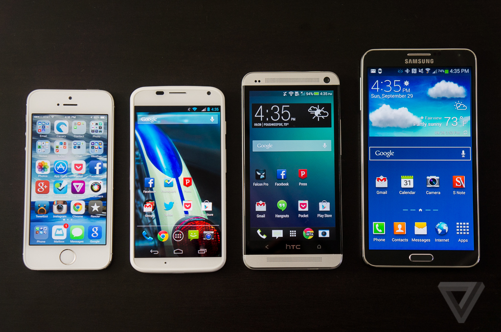
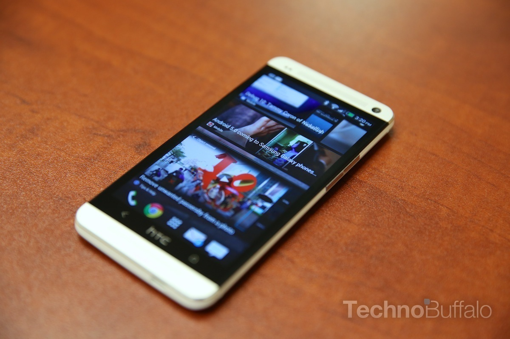
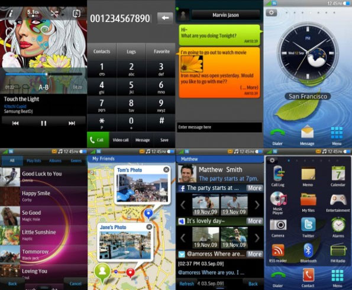
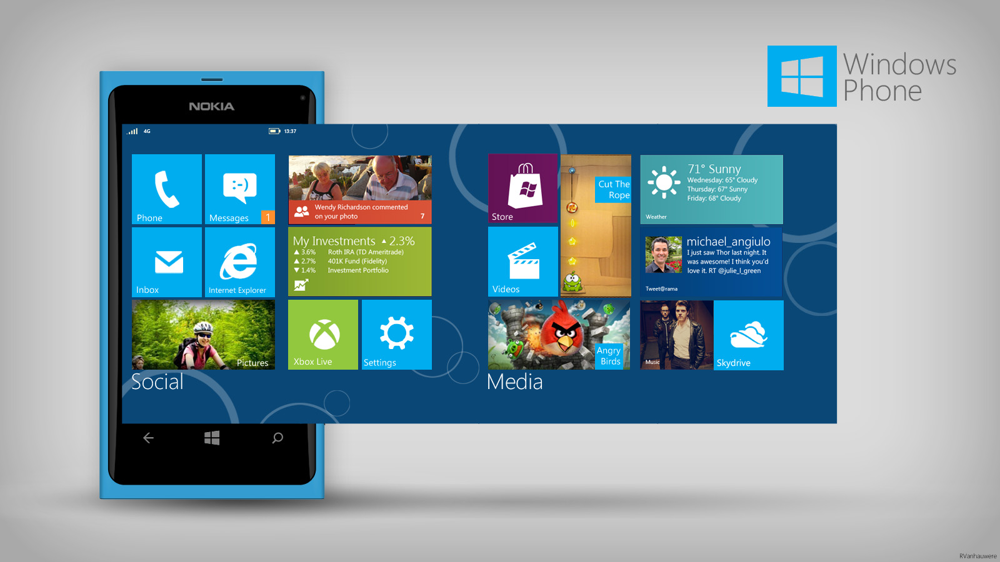
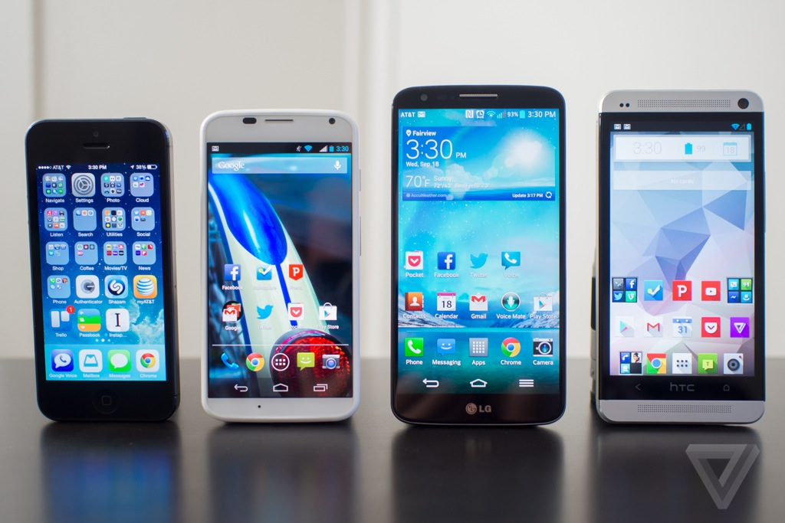
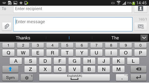

LG G2 review
LG G2 review
| Home | History Of smartphones | Reviews | Best cameraphones | Best android smartphones of 2013 |


You probably hear the term "smartphone" tossed around a lot. But if you've ever wondered exactly what a smartphone is, well, you're not alone. How is a smartphone different than a cell phone, and what makes it so smart?
In a nutshell, a smartphone is a device that lets you make telephone calls, but also adds in features that, in the past, you would have found only on a personal digital assistant or a computer--such as the ability to send and receive e-mail and edit Office documents, for example.
But, to really understand what a smartphone is (and is not), we should start with a history lesson. In the beginning, there were cell phones and personal digital assistants (or PDAs). Cell phones were used for making calls--and not much else--while PDAs, like the Palm Pilot, were used as personal, portable organizers. A PDA could store your contact info and a to-do list, and could sync with your computer.
Eventually, PDAs gained wireless connectivity and were able to send and receive e-mail. Cell phones, meanwhile, gained messaging capabilities, too. PDAs then added cellular phone features, while cell phones added more PDA-like (and even computer-like) features. The result was the smartphone.
Key Smartphone Features

While there is no standard definition of the term "smartphone" across the industry, we thought it would be helpful to point out what we here at About.com define as a smartphone, and what we consider a cell phone. Here are the features we look at:
Operating System
In general, a smartphone will be based on an operating system that allows it to run applications. Apple's iPhone runs the iOS, and BlackBerry smartphones run the BlackBerry OS. Other devices run Google's Android OS, HP's webOS, and Microsoft's Windows Phone.



Apps
While almost all cell phones include some sort of software (even the most basic models these days include an address book or some sort of contact manager, for example), a smartphone will have the ability to do more. It may allow you to create and edit Microsoft Office documents--or at least view the files. It may allow you to download apps, such as personal and business finance managers, handy personal assistants, or, well, almost anything. Or it may allow you to edit photos, get ]driving directions via GPS, and create a playlist of digital tunes.
Web Access
More smartphones can access the Web at higher speeds, thanks to the growth of 4G and 3G data networks, as well as the addition of Wi-Fi support to many handsets. Still, while not all smartphones offer high-speed Web access, they all offer some sort of access. You can use your smartphone to browse your favorite sites.

QWERTY Keyboard

By our definition, a smartphone includes a QWERTY keyboard. This means that the keys are laid out in the same manner they would be on your computer keyboard--not in alphabetical order on top of a numeric keypad, where you have to tap the number 1 to enter an A, B, or C. The keyboard can be hardware (physical keys that you type on) or software (on a touch screen, like you'll find on the iPhone).
Messaging
All cell phones can send and receive text messages, but what sets a smartphone apart is its handling of e-mail. A smartphone can sync with your personal and, most likely, your professional e-mail account. Some smartphones can support
multiple e-mail accounts. Others include access to the popular instant messaging services, like AOL's AIM and Yahoo! Messenger.
These are just some of the features that make a smartphone smart. The technology surrounding smartphones and cell phones is constantly changing, though. What constitutes a smartphone today may change by next week, next month, or next year. Stay tuned!
To know more about smartphones in detail ,take a tour of our website.